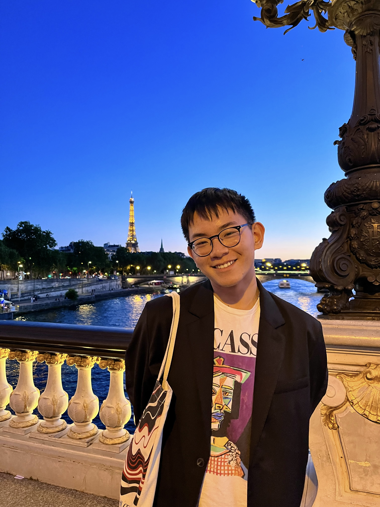

Michael's Resume

Contact Me
Summary
I am a rising senior studying Computer Science at Boston University. Passionate about coding
and data structures, I hope to further my knowledge and experience in the technical field, while
also challenging myself to think outside of the box. Well-versed in Python, Java, Assembly, C and
more, I aspire to strengthen my coding skills and gain more insight on object-oriented programming
to become a more well-rounded software engineer.
Education
- Bachelors of Arts, Computer Science - Boston University (2020 - Present)
- Study Abroad - Boston University Paris Center (2022)
Experience
Projects
Head to Head
- Parsed through the Spotify API to store a user's listening statistics in a MySQL database for year long "Spotify-Wrapped"
- Utilized the Open-AI API to create custom album covers based off of top songs, and artists
Eight Puzzle (Python)
- Created a game to simulate 3-D arrays that checks if the current state of the board matches the
goal state, and returns the appropriate result
- Tested different heuristic algorithms to find the quickest way to solve the eight puzzle using classes for objects
to perform state-space search
Calculator (Assembly/ C)
- Utilized GDB Debugger to trace the calculator program in assembly and find out how operators and numbers are
processed through memory
- Wrote the C equivalent to describe memory in terms of structures, and dictate compilers to use specific views of memory
as a unit
Wordle (Java)
- Implemented a console-based program of word guessing game with 6 guesses and created a mystery class to simulate the
computer’s answer
- Compared the user’s input to the computer’s to output in boolean whether or not each character was equivalent and in
the same position
Skills
Programming:
- Python
- Java
- HTML
- JavaScript
- CSS
- Standard ML
- C
- Assembly
- LaTeX
Technical Tools:
- Bash
- Git
- Linux
- MySQL
- GDB Debugger
- Emacs
- Microsoft Office Suite
- Canva
Leadership
- Director of Internal Relations/ Social Media Chair - Storybook Channel BU
September 2022 - Present
- Reaching out to other campus organizations to organize outreach events/fundraisers to donate
funds/books to larger non-profits
- Organizing meetings to discuss next steps on providing access to educational equity through diversified
narratives within children’s books
- Developing Instagram content using Canva to gain more members and awareness towards closing the gap in youth
educational resources